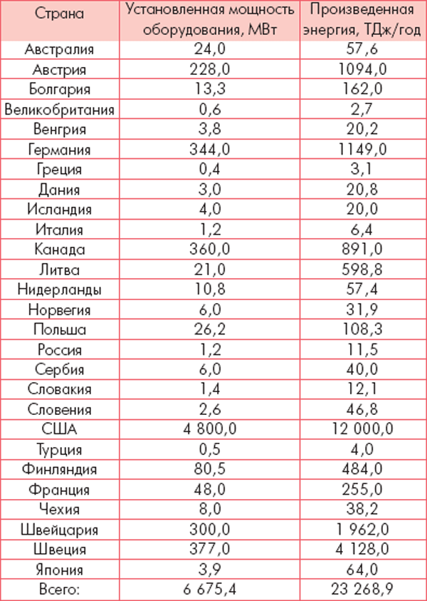
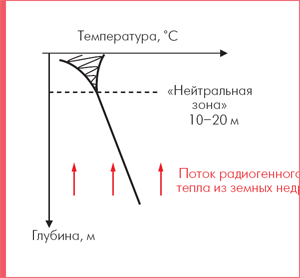
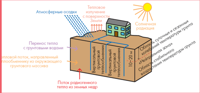
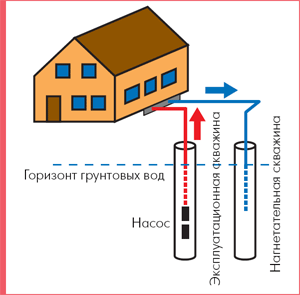
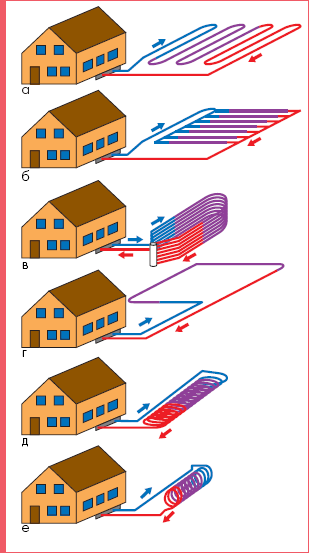
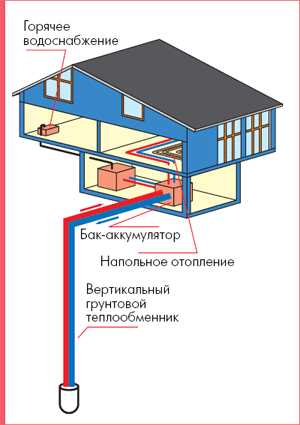
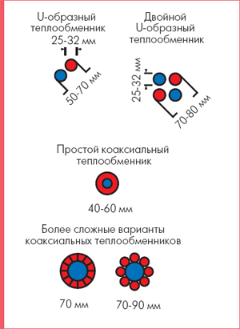
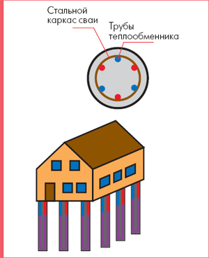
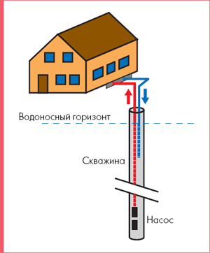

Об использовании низкопотенциальной тепловой энергии земли

Васильев Г.П., Научный руководитель ОАО «ИНСОЛАР-ИНВЕСТ», д.т.н., Председатель Совета директоров
ОАО « ИНСОЛАР-ИНВЕСТ»
Н. В. Шилкин, инженер, НИИСФ (Москва)
Рациональное использование топливно-энергетических ресурсов представляет сегодня собой одну из глобальных мировых проблем, успешное решение которой, по-видимому, будет иметь определяющее значение не только для дальнейшего развития мирового сообщества, но и для сохранения среды его обитания. Одним из перспективных путей решения этой проблемы является применение новых энергосберегающих технологий, использующих нетрадиционные возобновляемые источники энергии (НВИЭ) Истощение запасов традиционного ископаемого топлива и экологические последствия его сжигания обусловили в последние десятилетия значительное повышение интереса к этим технологиям практически во всех развитых странах мира.
Преимущества технологий теплоснабжения, использующих нетрадиционные источники энергии в сравнении с их традиционными аналогами, связаны не только со значительными сокращениями затрат энергии в системах жизнеобеспечения зданий и сооружений, но и с их экологической чистотой, а также новыми возможностями в области повышения степени автономности систем жизнеобеспечения. По всей видимости, в недалеком будущем именно эти качества будут иметь определяющее значение в формировании конкурентной ситуации на рынке теплогенерирующего оборудования.
Анализ возможных областей применения в экономике России технологий энергосбережения, использующих нетрадиционные источники энергии, показывает, что в России наиболее перспективной областью их внедрения являются системы жизнеобеспечения зданий. При этом весьма эффективным направлением внедрения рассматриваемых технологий в практику отечественного строительства представляется широкое применение теплонасосных систем теплоснабжения (ТСТ), использующих в качестве повсеместно доступного источника тепла низкого потенциала грунт поверхностных слоев Земли.
При использовании тепла Земли можно выделить два вида тепловой энергии – высокопотенциальную и низкопотенциальную. Источником высокопотенциальной тепловой энергии являются гидротермальные ресурсы – термальные воды, нагретые в результате геологических процессов до высокой температуры, что позволяет их использовать для теплоснабжения зданий. Однако использование высокопотенциального тепла Земли ограничено районами с определенными геологическими параметрами. В России это, например, Камчатка, район Кавказских минеральных вод; в Европе источники высокопотенциального тепла есть в Венгрии, Исландии и Франции.
В отличие от «прямого» использования высокопотенциального тепла (гидротермальные ресурсы), использование низкопотенциального тепла Земли посредством тепловых насосов возможно практически повсеместно. В настоящее время это одно из наиболее динамично развивающихся направлений использования нетрадиционных возобновляемых источников энергии.
Низкопотенциальное тепло Земли может использоваться в различных типах зданий и сооружений многими способами: для отопления, горячего водоснабжения, кондиционирования (охлаждения) воздуха, обогрева дорожек в зимнее время года, для предотвращения обледенения, подогрева полей на открытых стадионах и т. п. В англоязычной технической литературе такие системы обозначаются как «GHP» – «geothermal heat pumps», геотермальные тепловые насосы.
Климатические характеристики стран Центральной и Северной Европы, которые вместе с США и Канадой являются главными районами использования низкопотенциального тепла Земли, определяют главным образом потребность в отоплении; охлаждение воздуха даже в летний период требуется относительно редко. Поэтому, в отличие от США, тепловые насосы в европейских странах работают в основном в режиме отопления. В США тепловые насосы чаще используются в системах воздушного отопления, совмещенного с вентиляцией, что позволяет как подогревать, так и охлаждать наружный воздух. В европейских странах тепловые насосы обычно применяются в системах водяного отопления. Поскольку эффективность тепловых насосов увеличивается при уменьшении разности температур испарителя и конденсатора, часто для отопления зданий используются системы напольного отопления, в которых циркулирует теплоноситель относительно низкой температуры (35–40 оC).
Большинство тепловых насосов в Европе, предназначенных для использования низкопотенциального тепла Земли, оборудовано компрессорами с электрическим приводом.
За последние десять лет количество систем, использующих для тепло- и холодоснабжения зданий низкопотенциальное тепло Земли посредством тепловых насосов, значительно увеличилось. Наибольшее число таких систем используется в США. Большое число таких систем функционируют в Канаде и странах центральной и Северной Европы: Австрии, Германии, Швеции и Швейцарии. Швейцария лидирует по величине использования низкопотенциальной тепловой энергии Земли на душу населения. В России за последние десять лет по технологии и при участии ОАО «ИНСОЛАР-ИНВЕСТ», специализирующегося в этой области, построены лишь единичные объекты, наиболее интересные из которых представлены в [2 ,11].
В Москве в микрорайоне Никулино-2 фактически впервые была построена теплонасосная система горячего водоснабжения многоэтажного жилого дома [13, 14]. Этот проект был реализован в 1998–2002 годах Министерством обороны РФ совместно с Правительством Москвы, Минпромнауки России, Ассоциацией НП «АВОК» и ОАО «ИНСОЛАР-ИНВЕСТ» в рамках «Долгосрочной программы энергосбережения в г. Москве».
В качестве низкопотенциального источника тепловой энергии для испарителей тепловых насосов используется тепло грунта поверхностных слоев Земли, а также тепло удаляемого вентиляционного воздуха. Установка для подготовки горячего водоснабжения расположена в подвале здания. Она включает в себя следующие основные элементы:
- парокомпрессионные теплонасосные установки (ТНУ);
- баки-аккумуляторы горячей воды;
- системы сбора низкопотенциальной тепловой энергии грунта и низкопотенциального тепла удаляемого вентиляционного воздуха;
- циркуляционные насосы, контрольно-измерительную аппаратуру
Основным теплообменным элементом системы сбора низкопотенциального тепла грунта являются вертикальные грунтовые теплообменники коаксиального типа, расположенные снаружи по периметру здания. Эти теплообменники представляют собой 8 скважин глубиной от 32 до 35 м каждая, устроенных вблизи дома. Поскольку режим работы тепловых насосов, использующих тепло земли и тепло удаляемого воздуха, постоянный, а потребление горячей воды переменное, система горячего водоснабжения оборудована баками-аккумуляторами.
Данные, оценивающие мировой уровень использования низкопотенциальной тепловой энергии Земли посредством тепловых насосов, приведены в таблице.

Таблица 1. Мировой уровень использования низкопотенциальной тепловой энергии Земли посредством тепловых насосов [1]
Грунт как источник низкопотенциальной тепловой энергии
В качестве источника низкопотенциальной тепловой энергии могут использоваться подземные воды с относительно низкой температурой либо грунт поверхностных (глубиной до 400 м) слоев Земли. Теплосодержание грунтового массива в общем случае выше. Тепловой режим грунта поверхностных слоев Земли формируется под действием двух основных факторов – падающей на поверхность солнечной радиации и потоком радиогенного тепла из земных недр. Сезонные и суточные изменения интенсивности солнечной радиации и температуры наружного воздуха вызывают колебания температуры верхних слоев грунта. Глубина проникновения суточных колебаний температуры наружного воздуха и интенсивности падающей солнечной радиации в зависимости от конкретных почвенно-климатических условий колеблется в пределах от нескольких десятков сантиметров до полутора метров. Глубина проникновения сезонных колебаний температуры наружного воздуха и интенсивности падающей солнечной радиации не превышает, как правило, 15–20 м.
Температурный режим слоев грунта, расположенных ниже этой глубины («нейтральной зоны»), формируется под воздействием тепловой энергии, поступающей из недр Земли и практически не зависит от сезонных, а тем более суточных изменений параметров наружного климата (рис. 1).

Рис. 1. График изменения температуры грунта в зависимости от глубины
С увеличением глубины температура грунта возрастает в соответствии с геотермическим градиентом (примерно 3 градуса С на каждые 100 м). Величина потока радиогенного тепла, поступающего из земных недр, для разных местностей различается. Для Центральной Европы эта величина составляет 0,05–0,12 Вт/м2 [3].
В эксплуатационный период массив грунта, находящийся в пределах зоны теплового влияния регистра труб грунтового теплообменника системы сбора низкопотенциального тепла грунта (системы теплосбора), вследствие сезонного изменения параметров наружного климата, а также под воздействием эксплуатационных нагрузок на систему теплосбора, как правило, подвергается многократному замораживанию и оттаиванию. При этом, естественно, происходит изменение агрегатного состояния влаги, заключенной в порах грунта и находящейся в общем случае как в жидкой, так и в твердой и газообразной фазах одновременно. Иначе говоря, грунтовый массив системы теплосбора, независимо от того, в каком состоянии он находится (в мерзлом или талом), представляет собой сложную трехфазную полидисперсную гетерогенную систему, скелет которой образован огромным количеством твердых частиц разнообразной формы и величины и может быть как жестким, так и подвижным, в зависимости от того, прочно ли связаны между собой частицы или же они отделены друг от друга веществом в подвижной фазе. Промежутки между твердыми частицами могут быть заполнены минерализованной влагой, газом, паром и льдом или тем и другим одновременно. Моделирование процессов тепломассопереноса, формирующих тепловой режим такой многокомпонентной системы, представляет собой чрезвычайно сложную задачу, поскольку требует учета и математического описания разнообразных механизмов их осуществления: теплопроводности в отдельной частице, теплопередачи от одной частицы к другой при их контакте, молекулярной теплопроводности в среде, заполняющей промежутки между частицами, конвекции пара и влаги, содержащихся в поровом пространстве, и многих других.
Особо следует остановиться на влиянии влажности грунтового массива и миграции влаги в его поровом пространстве на тепловые процессы, определяющие характеристики грунта как источника низкопотенциальной тепловой энергии.
В капилярно-пористых системах, каковой является грунтовый массив системы теплосбора, наличие влаги в поровом пространстве оказывает заметное влияние на процесс распространения тепла. Корректный учет этого влияния на сегодняшний день сопряжен со значительными трудностями, которые прежде всего связаны с отсутствием четких представлений о характере распределения твердой, жидкой и газообразной фаз влаги в той или иной структуре системы. До сих пор не выяснены природа сил связи влаги с частицами скелета, зависимость форм связи влаги с материалом на различных стадиях увлажнения, механизм перемещения влаги в поровом пространстве.
При наличии в толще грунтового массива температурного градиента молекулы пара перемещаются к местам, имеющим пониженный температурный потенциал, но в то же время под действием гравитационных сил возникает противоположно направленный поток влаги в жидкой фазе. Кроме этого, на температурный режим верхних слоев грунта оказывает влияние влага атмосферных осадков, а также грунтовые воды.
Основные факторы, под воздействием которых формируются температурный режим грунтового массива систем сбора низкопотенциального тепла грунта, приведены на рис. 2.

Рис. 2. Факторы, под воздействием которых формируются температурный режим грунта [3]
Виды систем использования низкопотенциальной тепловой энергии Земли
Грунтовые теплообменники связывают теплонасосное оборудование с грунтовым массивом. Кроме «извлечения» тепла Земли, грунтовые теплообменники могут использоваться и для накопления тепла (или холода) в грунтовом массиве.
В общем случае можно выделить два вида систем использования низкопотенциальной тепловой энергии Земли:
- открытые системы: в качестве источника низкопотенциальной тепловой энергии используются грунтовые воды, подводимые непосредственно к тепловым насосам;
- замкнутые системы: теплообменники расположены в грунтовом массиве; при циркуляции по ним теплоносителя с пониженной относительно грунта температурой происходит «отбор» тепловой энергии от грунта и перенос ее к испарителю теплового насоса (или, при использовании теплоносителя с повышенной относительно грунта температурой, его охлаждение).
Основная часть открытых систем – скважины, позволяющие извлекать грунтовые воды из водоносных слоев грунта и возвращать воду обратно в те же водоносные слои. Обычно для этого устраиваются парные скважины. Схема такой системы приведена на рис. 3.

Рис. 3. Схема открытой системы использования низкопотенциальной тепловой энергии грунтовых вод
Достоинством открытых систем является возможность получения большого количества тепловой энергии при относительно низких затратах. Однако скважины требуют обслуживания. Кроме этого, использование таких систем возможно не во всех местностях. Главные требования к грунту и грунтовым водам таковы:
- достаточная водопроницаемость грунта, позволяющая пополняться запасам воды;
- хороший химический состав грунтовых вод (например, низкое железосодержание), позволяющий избежать проблем, связанных с образованием отло- жение на стенках труб и коррозией.
Открытые системы чаще используются для тепло- или холодоснабжения крупных зданий. Самая большая в мире геотермальная теплонасосная система использует в качестве источника низкопотенциальной тепловой энергии грунтовые воды. Эта система расположена в США в г. Луисвилль (Louisville), штат Кентукки. Система используется для тепло- и холодоснабжения гостиничноофисного комплекса; ее мощность составляет примерно 10 МВт.
Иногда к системам, использующим тепло Земли, относят и системы использования низкопотенциального тепла открытых водоемов, естественных и искусственных. Такой подход принят, в частности, в США. Системы, использующие низкопотенциальное тепло водоемов, относятся к открытым, как и системы, использующие низкопотенциальное тепло грунтовых вод.
Замкнутые системы, в свою очередь, делятся на горизонтальные и вертикальные.
Горизонтальный грунтовой теплообменник (в англоязычной литературе используются также термины «ground heat collector» и «horizontal loop») устраивает- ся, как правило, рядом с домом на небольшой глубине (но ниже уровня промерзания грунта в зимнее время). Использование горизонтальных грунтовых теплообменников ограничено размерами имеющейся площадки.
В странах Западной и Центральной Европы горизонтальные грунтовые теплообменники обычно представляют собой отдельные трубы, положенные относительно плотно и соединенные между собой последовательно или параллельно (рис. 4а, 4б). Для экономии площади участка были разработаны усовершенствованные типы теплообменников, например, теплообменники в форме спирали, расположенной горизонтально или вертикально (рис 4д, 4е). Такая форма теплообменников распространена в США.

Рис. 4. Виды горизонтальных грунтовых теплообменников
а – теплообменник из последовательно соединенных труб;
б – теплообменник из параллельно соединенных труб;
в – горизонтальный коллектор, уложенный в траншее;
г – теплообменник в форме петли;
д – теплообменник в форме спирали, расположенной горизонтально (так называемый «slinky»
коллектор;
е – теплообменник в форме спирали, расположенной вертикально
Если система с горизонтальными теплообменниками используется только для получения тепла, ее нормальное функционирование возможно только при условии достаточных теплопоступлений с поверхности земли за счет солнечной радиации. По этой причине поверхность выше теплообменников должна быть подвержена воздействию солнечных лучей.
Вертикальные грунтовые теплообменники (в англоязычной литературе принято обозначение «BHE» – «borehole heat exchanger») позволяют использовать низкопотенциальную тепловую энергию грунтового массива, лежащего ниже «нейтральной зоны» (10–20 м от уровня земли). Системы с вертикальными грунтовыми теплообменниками не требуют участков большой площади и не зависят от интенсивности солнечной радиации, падающей на поверхность. Вертикальные грунтовые теплообменники эффективно работают практически во всех видах геологических сред, за исключением грунтов с низкой теплопро- водностью, например, сухого песка или сухого гравия. Системы с вертикальными грунтовыми теплообменниками получили очень широкое распространение.
Схема отопления и горячего водоснабжения одноквартирного жилого дома посредством теплонасосной установки с вертикальным грунтовым теплообменником приведена на рис. 5.

Рис. 5. Схема отопления и горячего водоснабжения одноквартирного жилого дома посредством теплонасосной установки с вертикальным грунтовым теплообменником
Теплоноситель циркулирует по трубам (чаще всего полиэтиленовым или полипропиленовым), уложенным в вертикальных скважинах глубиной от 50 до 200 м. Обычно используется два типа вертикальных грунтовых теплообменников (рис. 6):
- U-образный теплообменник, представляющие собой две параллельные трубы, соединенные в нижней части. В одной скважине располагаются одна или две (реже три) пары таких труб. Преимуществом такой схемы является относительно низкая стоимость изготовления. Двойные U-образные теплообменники – наиболее широко используемый в Европе тип вертикальных грунтовых теплообменников.
- Коаксиальный (концентрический) теплообменник. Простейший коаксиальный теплообменник представляет собой две трубы различного диаметра. Труба меньшего диаметра располагается внутри другой трубы. Коаксиальные теплообменники могут быть и более сложных конфигураций.

Рис. 6. Сечение различных типов вертикальных грунтовых теплообменников [3]
Для увеличения эффективности теплообменников пространство между стенками скважины и трубами заполняется специальными теплопроводящими материалами.
Системы с вертикальными грунтовыми теплообменниками могут использоваться для тепло- и холодоснабжения зданий различных размеров. Для небольшого здания достаточно одного теплообменника; для больших зданий может потребоваться устройство целой группы скважин с вертикальными теплообменниками. Самое большое в мире число скважин используется в системе тнепло- и холодоснабжения «Richard Stockton College» в США в штате Нью-Джерси. Вертикальные грунтовые теплообменники этого колледжа располагают- ся в 400 скважинах глубиной 130 м. В Европе наибольшее число скважин (154 скважины глубиной 70 м) используются в системе тепло- и холодоснабжения центрального офиса Германской службы управления воздушным движением («Deutsche Flug-sicherung»).
Частным случаем вертикальных замкнутых систем является использование в качестве грунтовых теплообменников строительных конструкций, например фундаментных свай с замоноличенными трубопроводами. Сечение такой сваи с тремя контурами грунтового теплообменника приведено на рис. 7.

Рис. 7. Схема грунтовых теплообменников, замоноличенных в фундаментные сваи здания и поперечное сечение такой сваи
Грунтовой массив (в случае вертикальных грунтовых теплообменников) и строительные конструкции с грунтовыми теплообменниками могут использоваться не только как источник, но и как естественный аккумулятор тепловой энергии или «холода», например тепла солнечной радиации.
Существуют системы использования низкопотенциального тепла Земли, которые нельзя однозначно отнести к открытым или замкнутым. Например, одна и та же глубокая (глубиной от 100 до 450 м) скважина, заполненная водой, может быть как эксплуатационной, так и нагнетательной. Диаметр скважины обычно составляет 15 см. В нижнюю часть скважины помещается насос, посредством которого вода из скважины подается к испарителям теплового насоса. Обратная вода возвращается в верхнюю часть водяного столба в ту же скважину. Происходит постоянная подпитка скважины грунтовыми водами, и открытая система работает подобно замкнутой. Системы такого типа в англоязычной литературе носят название «standing column well system» (рис. 8).

Рис. 8. Схема скважины типа «standing column well»
Обычно скважины такого типа используются и для снабжения здания питьевой водой. Однако такая система может работать эффективно только в почвах, которые обеспечивают постоянную подпитку скважины водой, что предотвращает ее замерзание. Если водоносный горизонт залегает слишком глубоко, для нормального функционирования системы потребуется мощный насос, требующий повышенных затрат энергии. Большая глубина скважины обуславливает достаточно высокую стоимость подобных систем, поэтому они не используются для тепло- и холодоснабжения небольших зданий. Сейчас в мире функционирует несколько таких систем в США, Германии и Европе.
Одно из перспективных направлений – использование в качестве источника низкопотенциальной тепловой энергии воды из шахт и туннелей. Температура этой воды постоянна в течение всего года. Вода из шахт и туннелей легко доступна.
«Устойчивость» систем использования низкопотенциального тепла ЗемлиПри эксплуатации грунтового теплообменника может возникнуть ситуация, когда за время отопительного сезона температура грунта вблизи грунтового теплообменника понижается, а в летний период грунт не успевает прогреться до начальной температуры – происходит понижение его температурного потенциала. Потребление энергии в течение следующего отопительного сезона вызывает еще большее понижение температуры грунта, и его температурный потенциал еще больше снижается. Это заставляет при проектировании систем использования низкопотенциального тепла Земли рассматривать проблему «устойчивости» (sustainability) таких систем. Часто энергетические ресурсы для снижения периода окупаемости оборудования эксплуатируются очень интенсивно, что может привести к их быстрому истощению. Поэтому необходимо поддерживать такой уровень производства энергии, который бы позволил эксплуатировать источник энергетических ресурсов длительное время. Эта способность систем поддерживать требуемый уровень производства тепловой энергии длительное время называется «устойчивостью» (sustainability). Для систем использования низкопотенциального тепла Земли дано следующее определение устойчивости [4, 5]: «Для каждой системы использования низкопотенциального тепла Земли и для каждого режима работы этой системы существует некоторый максимальный уровень производства энергии; производство энергии ниже этого уровня можно поддерживать длительное время (100–300 лет)».
Проведенные в ОАО «ИНСОЛАР-ИНВЕСТ» исследования показали, что потребление тепловой энергии из грунтового массива к концу отопительного сезона вызывает вблизи регистра труб системы теплосбора понижение температуры грунта, которое в почвенно-климатических условиях большей части территории России не успевает компенсироваться в летний период года, и к началу следующего отопительного сезона грунт выходит с пониженным температурным потенциалом. Потребление тепловой энергии в течение следующего отопительного сезона вызывает дальнейшее снижение температуры грунта, и к началу третьего отопительного сезона его температурный потенциал еще больше отличается от естественного. И так далее. Однако огибающие теплового влияния многолетней эксплуатации системы теплосбора на естественный температурный режим грунта имеют ярко выраженный экспоненциальный характер, и к пятому году эксплуатации грунт выходит на новый режим, близкий к периодическому, то есть, начиная с пятого года эксплуатации, многолетнее потребление тепловой энергии из грунтового массива системы теплосбора сопровождается периодическими изменениями его температуры. Таким образом, при проектировании теплонасосных систем теплоснабжения представляется необходимым учет падения температур грунтового массива, вызванного многолетней эксплуатацией системы теплосбора, и использование в качестве расчетных параметров температур грунтового массива, ожидаемых на 5-й год эксплуатации ТСТ [12].
В комбинированных системах, используемых как для тепло-, так и для холодоснабжения, тепловой баланс устанавливается «автоматически»: в зимнее время (требуется теплоснабжение) происходит охлаждение грунтового массива, в летнее время (требуется холодоснабжение) – нагрев грунтового массива. В системах, использующих низкопотенциальное тепло грунтовых вод, происходит постоянное пополнение водных запасов за счет воды, просачивающейся с поверхности, и воды, поступающей из более глубоких слоев грунта. Таким образом, теплосодержание грунтовых вод увеличивается как «сверху» (за счет тепла атмосферного воздуха), так и «снизу» (за счет тепла Земли); величина теплопоступлений «сверху» и «снизу» зависит от толщины и глубины залегания водоносного слоя. За счет этих теплопоступлений температура грунтовых вод остается постоянной в течение всего сезона и мало меняется в процессе эксплуатации.
В системах с вертикальными грунтовыми теплообменниками ситуация иная. При отводе тепла температура грунта вокруг грунтового теплообменника понижается. На понижение температуры влияет как особенности конструкции теплообменника, так и режим его эксплуатации. Например, в системах с высокими величинами отводимой тепловой энергии (несколько десятков ватт на метр длины теплообменника) или в системах с грунтовым теплообменником, расположенным в грунте с низкой теплопроводностью (например, в сухом песке или сухом гравии) понижение температуры будет особенно заметным и может привести к замораживанию грунтового массива вокруг грунтового теплообменника.
Немецкие специалисты провели измерения температуры грунтового массива, в котором устроен вертикальный грунтовой теплообменник глубиной 50 м, расположенный недалеко от Франкфурта-на-Майне. Для этого вокруг основной скважины на расстоянии 2,5, 5 и 10 м от было пробурено 9 скважин той же глубины. Во всех десяти скважинах через каждые 2 м устанавливались датчики для измерения температуры – всего 240 датчиков. На рис. 9 приведены схемы, показывающие распределение температур в грунтовом массиве вокруг вертикального грунтового теплообменника в начале и по окончании первого отопительного сезона. В конце отопительного сезона хорошо заметно уменьшение температуры грунтового массива вокруг теплообменника. Возникает тепловой поток, направленный к теплообменнику из окружающего грунтового массива, который частично компенсирует снижение температуры грунта, вызванное «отбором» тепла. Величина этого потока по сравнению с величиной потока тепла из земных недр в данной местности (80–100 мВт/кв.м) оценивается достаточно высоко (несколько ватт на квадратный метр).
Рис. 9. Схемы распределения температур в грунтовом массиве вокруг вертикального грунтового теплообменника в начале и в конце первого отопительного сезона [6]
Поскольку относительно широкое распространение вертикальные теполообменники стали получать примерно 15–20 лет назад, во всем мире ощущается недостаток экспериментальных данных, полученных при длительных (несколько десятков лет) сроках эксплуатации систем с теплообменниками такого типа. Возникает вопрос об устойчивости этих систем, об их надежности при длительных сроках эксплуатации. Является ли низкопотенциальное тепло Земли во- зобновляемым источником энергии? Каков период «возобновления» этого источника?
При эксплуатации сельской школы в Ярославской области [2], оборудованной теплонасосной системой, использующей вертикальный грунтовый теплообменник, средние значения удельного теплосъема находились на уровне 120–190 Вт/пог. м длины теплообменника.
С 1986 года в Швейцарии неподалеку от Цюриха проводились исследования системы с вертикальными грунтовыми теплообменниками [5]. В грунтовом массиве был устроен вертикальный грунтовой теплообменник коаксиального типа глубиной 105 м. Этот теплообменник использовался в качестве источника низкопотенциальной тепловой энергии для теплонасосной системы, установленной в одноквартирном жилом доме. Вертикальный грунтовой теплообменник обеспечивал пиковую мощность примерно 70 Вт на каждый метр длины, что создавало значительную тепловую нагрузку на окружающий грунтовой массив. Годовое производство тепловой энергии составляет около 13 МВт•ч
На расстоянии 0,5 и 1 м от основной скважины были пробурены две дополнительных, в которых на глубине в 1, 2, 5, 10, 20, 35, 50, 65, 85 и 105 м установлены датчики температуры, после чего скважины были заполнены глинисто-цементной смесью. Температура измерялась каждые тридцать минут. Кроме температуры грунта фиксировались и другие параметры: скорость движения теплоносителя, потребление энергии приводом компрессора теплового насоса, температура воздуха и т. п.
Первый период наблюдений продолжался с 1986 по 1991 год. Измерения показали, что влияние тепла наружного воздуха и солнечной радиации отмечается в поверхностном слое грунта на глубине до 15 м. Ниже этого уровня тепловой режим грунта формируется главным образом за счет тепла земных недр. За первые 2–3 года эксплуатации температура грунтового массива, окружающего вертикальный теплообменник, резко понизилась, однако с каждым годом понижение температуры уменьшалось, и через несколько лет система вышла на режим, близкий к постоянному, когда температура грунтового массива вокруг теплообменника стала ниже первоначальной на 1–2 оC.
Осенью 1996 года, через десять лет после начала эксплуатации системы, измерения были возобновлены. Эти измерения показали, что температура грунта существенным образом не изменилась. В последующие годы были зафиксированы незначительные колебания температуры грунта в пределах 0,5 градусов C в зависимости от ежегодной отопительной нагрузки. Таким образом, система вышла на квазистационарный режим после первых нескольких лет эксплуатации.
На основании экспериментальных данных были построены математические модели процессов, проходящих в грунтовом массиве, что позволило сделать долгосрочный прогноз изменения температуры грунтового массива.
Математическое моделирование показало, что ежегодное понижение температуры будет постепенно уменьшаться, а объем грунтового массива вокруг теплообменника, подверженного понижению температуры, с каждым годом будет увеличиваться. По окончании периода эксплуатации начинается процесс регенерации: температура грунта начинает повышаться. Характер протекания процесса регенерации подобен характеру процесса «отбора» тепла: в первые годы эксплуатации происходит резкое повышение температуры грунта, а в последующие годы скорость повышения температуры уменьшается. Продолжительность периода «регенерации» зависит от продолжительности периода эксплуатации. Эти два периода примерно одинаковы. В рассматриваемом случае период эксплуатации грунтового теплообменника равнялся тридцати годам, и период «регенерации» также оценивается в тридцать лет.
Таким образом, системы тепло- и холодоснабжения зданий, использующие низкопотенциальное тепло Земли, представляют собой надежный источник энергии, который может быть использован повсеместно. Этот источник может использоваться в течение достаточно длительного времени, и может быть возобновлен по окончании периода эксплуатации.
Литература
1. Rybach L. Status and prospects of geothermal heat pumps (GHP) in Europe and worldwide;
sustainability aspects of GHPs. International course of geothermal heat pumps, 2002
2. Васильев Г.П., Крундышев Н.С. Энергоэффективная сельская школа в Ярославской
области. АВОК №5, 2002
3. Sanner B. Ground Heat Sources for Heat Pumps (classification, characteristics, advantages). 2002
4. Rybach L. Status and prospects of geothermal heat pumps (GHP) in Europe and worldwide;
sustainability aspects of GHPs. International course of geothermal heat pumps, 2002
5. ORKUSTOFNUN Working Group, Iceland (2001): Sustainable production of geothermal
energy – suggested definition. IGA News no. 43, January-March 2001, 1-2
6. Rybach L., Sanner B. Ground-source heat pump systems – the European experience. GeoHeat-
Center Bull. 21/1, 2000
7. Saving energy with Residential Heat Pumps in Cold Climates. Maxi Brochure 08. CADDET,
1997
8. Atkinson Schaefer L. Single Pressure Absorption Heat Pump Analysis. A Dissertation Presented
to The Academic Faculty. Georgia Institute
of Technology, 2000
9. Morley T. The reversed heat engine as a means of heating buildings, The Engineer 133: 1922
10. Fearon J. The history and development of the heat pump, Refrigeration and Air Conditioning. 1978
11. Васильев Г.П. Энергоэффективные здания с теплонасосными системами теплоснабжения. Журнал «ЖКХ», №12, 2002
12. Руководство по применению тепловых насосов с использованием
вторичных энергетических ресурсов и нетрадиционных возобновляемых
источников энергии. Москомархитектура. ГУП «НИАЦ», 2001
13. Энергоэффективный жилой дом в Москве. АВОК №4, 1999 г.
14. Васильев Г.П. Энергоэффективный экспериментальный жилой дом в микрорайоне
Никулино-2. АВОК №4, 2002